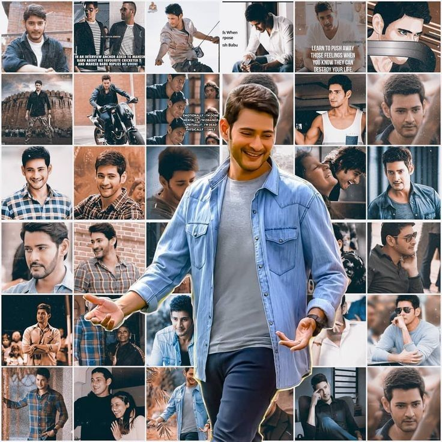

Mahesh Babu, celebrated as the "Prince of Tollywood" and "Superstar," is renowned for his effortless screen presence, sophisticated acting, and evergreen youthfulness. Son of legendary actor Krishna, he evolved from child artist to one of Indian cinema's most bankable leading men.
His films Pokiri and Okkadu redefined Telugu commercial cinema benchmarks. Through the Mahesh Babu Foundation and Heal-a-Child, he's sponsored thousands of heart surgeries for underprivileged children. In 2026, he's filming the much-anticipated SSMB29 with S.S. Rajamouli.
Married to former Miss India Namrata Shirodkar, the couple has two children: son Gautham Krishna and daughter Sitara Ghattamaneni. Mahesh maintains a low profile but shares family moments on social media, winning hearts with his family-man image.
Over 25 years, Mahesh Babu has shaped Telugu cinema with blockbusters blending mass appeal and substance. Films like Srimanthudu, Bharat Ane Nenu, Maharshi showcase his range from action hero to socially conscious performer.
| Actor Profile: Mahesh Babu | |
|---|---|
| Feature | Details |
| Full Name | Ghattamaneni Mahesh Babu |
| Born | August 9, 1975 (Age 50) |
| Birthplace | Chennai, Tamil Nadu |
| Nicknames | Super Star, Prince of Tollywood, One & Only |
| Occupation | Actor, Producer, Philanthropist |
| Debut Film | Rajakumarudu (1999 - Lead) |
| Blockbusters | Pokiri, Okkadu, Dookudu, Srimanthudu, Bharat Ane Nenu |
| Awards | 8 Filmfare Awards South, 5 Nandi Awards, 4 SIIMA Awards |
| Upcoming | SSMB29 (with S.S. Rajamouli), and other movies |
| Philanthropy | Mahesh Babu Foundation, Heal-a-Child |
| For More Info | Mahesh Babu - Wikipedia |